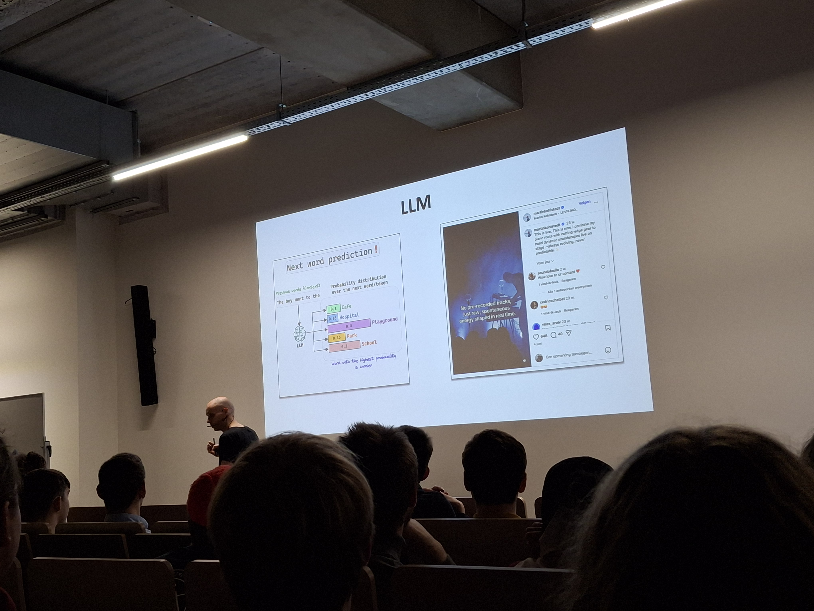
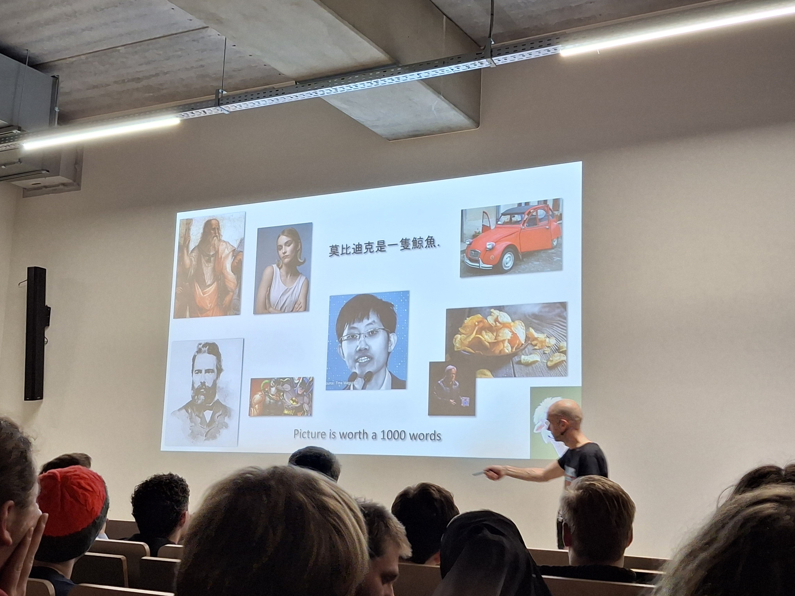
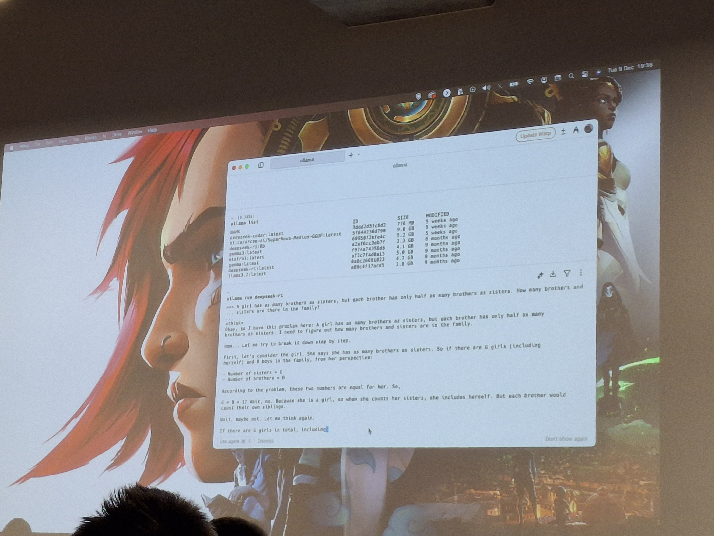

DeepSeek Uncovered: The Open-Source AI Challenger from the east



This one-time event focused on DeepSeek and the broader landscape of artificial intelligence, offering students an opportunity to deepen their understanding of how modern AI systems work. The session took place from 19:00 to 21:00 and was aimed at students interested in AI and emerging technologies.
The speaker, Dimitri Casier, is a lecturer in Applied Computer Science with practical experience in teaching AI-related topics. During the session, he provided insights into DeepSeek while also explaining the foundations of other AI systems and how they function behind the scenes.
The event covered both conceptual and technical aspects of AI, making it accessible while still offering depth. Topics included how AI models are trained, how they process information, and how tools like DeepSeek fit into the broader AI ecosystem.
Although I had already been introduced to AI through my “Applied AI” course at school, this session allowed me to explore the subject from another angle. It helped reinforce my existing knowledge while also adding new perspectives and a deeper understanding of how these systems operate in practice.
Overall, the event was informative and well-structured. While I do not have specific suggestions for improvement, the session succeeded in delivering valuable insights within a short timeframe.
Looking ahead, I might continue exploring this field further, as AI remains an interesting and rapidly evolving domain. I would attend a similar event again and would also recommend it to other students who are curious about AI and technologies like DeepSeek.